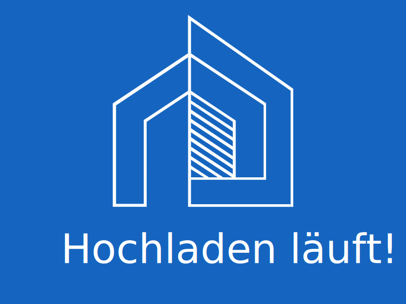

Markisen
Markisen sind eine ideale Lösung für die Beschattung von
Terrassen, Balkonen sowie Gastronomiebereichen. Die
Handhabung dieser Geräte ist unkompliziert, sie
überzeugen durch ein zeitgenössisches Design und die
Fähigkeit, großflächige Areale abzudecken.
Die
Ausführung kann manuell oder motorisiert erfolgen und
ist in einer breiten Auswahl an Farben und Materialien
erhältlich.
So ist eine Anpassung an die
jeweiligen Erfordernisse gewährleistet.
Vorteile der Markisen
- Große beschattete Fläche, freie Raumnutzung
- Einfache Bedienung, manuell oder motorisiert
- Wetterfestes, UV-beständiges Tuch
- Modernes, ästhetisches Erscheinungsbild
- Große Farb- und Musterauswahl
- Lange Lebensdauer, minimaler Wartungsaufwand